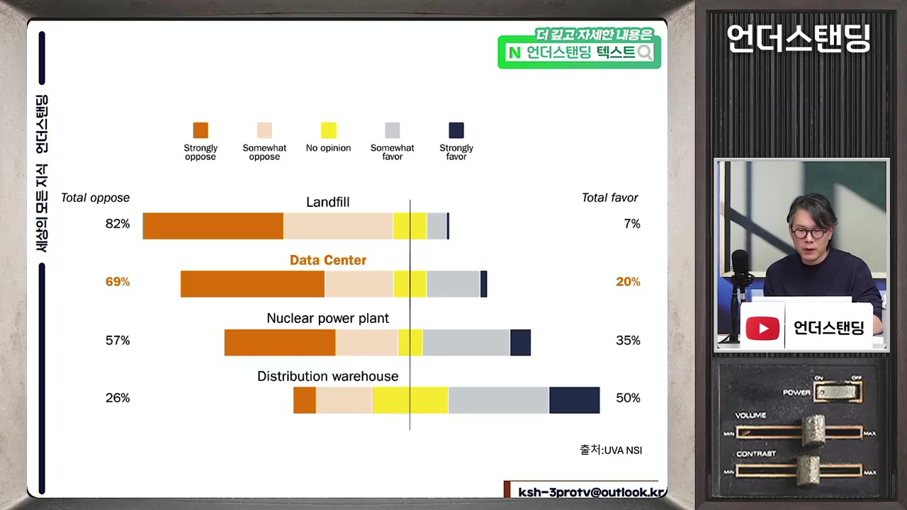
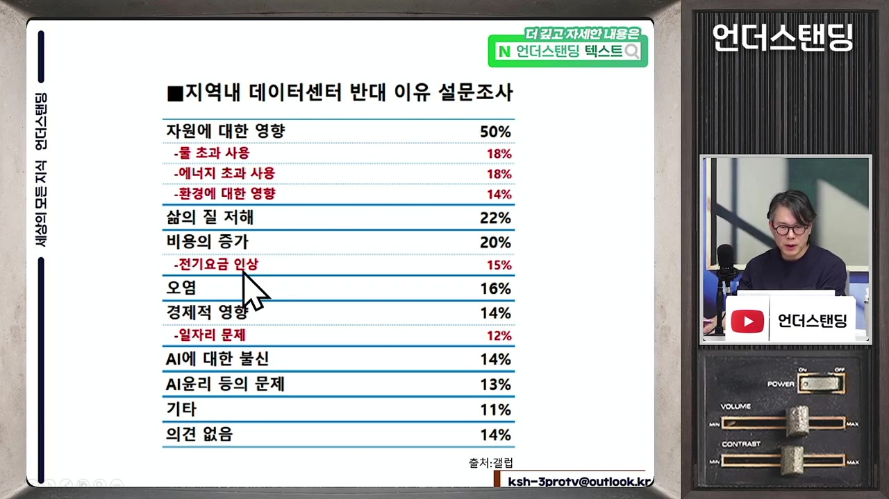
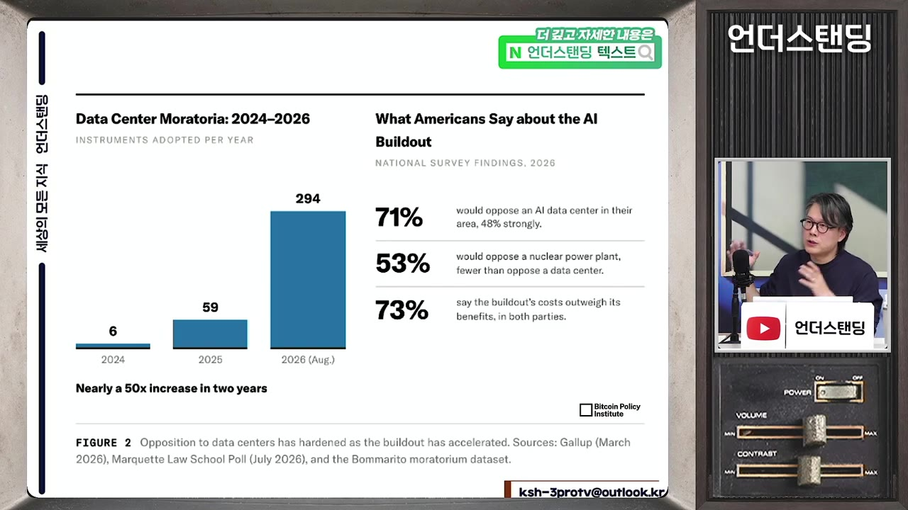

데이터센터를 쓰레기장만큼 혐오하는 미국인의 속마음 (언더스탠딩 김상훈 기자)
▶ 원본 영상 보기한눈에 보기
- 미국인의 69%가 집 근처(10마일 이내) 데이터센터를 싫어한다고 답했다. 쓰레기 매립장(82%) 다음이고, 원전(57%)보다 높다.
- 전기요금 때문만이 아니다. 갤럽 조사에서 반대 이유 1위는 물·에너지 과다 사용과 환경 영향(50%)이었고, 전기요금 인상은 15%였다.
- 핵심은 "나에게 돌아오는 이득이 없다"는 인식이다. 일자리는 거의 없고, 서비스는 전 세계가 누리고, 수혜는 해외 반도체 기업과 빅테크가 가져간다고 느낀다.
- 해법은 주민에게 직접 혜택을 주는 것이다. 반대에서 지지로 바꾸는 보상액의 중간값은 약 1만 달러였고, 지역 협약을 맺는 사례가 늘고 있다.
- 정치적으로 전면 건설 중단은 어렵지만, 인허가 지연과 보상 비용 증가로 확장 속도가 느려지면 부채로 자금을 조달하는 업체부터 타격을 받을 수 있다.
이런 분께 도움이 됩니다
- 미국 데이터센터 반대 여론의 원인과 AI·반도체 업황에 미칠 영향을 알고 싶은 분.
- 미국 중간선거 이후 AI 인프라 정책 방향을 가늠하려는 분.
핵심 내용
반감의 크기
- 버지니아대 국가안보연구소 설문(10월): 집 10마일 이내에 들어서면 싫다는 응답이 쓰레기 매립장 82%, 데이터센터 69%, 원전 57%, 물류센터 26%였다. (0:00, 6:23)
- 보고서 제목은 "데이터센터에 대한 반발은 데이터센터에 관한 게 아니다".
- 네 시설 중 "멀어질수록 내게 이득"이라 답해 아예 없었으면 하는 시설은 데이터센터뿐이었다.

- 퓨리서치(9월): 반감이 1년도 안 돼 급격히 강해졌다. (7:33)
- 환경 문제를 이유로 꼽은 비율: 지난해 1월 39% → 올해 8월 54%
- 가계 에너지 비용 증가: 38% → 50%
- 삶의 질 저하: 30% → 49%
💡 데이터센터는 이미 원전보다 미움받는 시설이 됐다.
왜 싫어하나
- 전기요금이 주원인이 아니다. 갤럽 조사에서 전기요금 인상은 15%에 그쳤고, 물·에너지 과다 사용과 환경 영향이 50%로 가장 많았다. (10:15)

- 주민 입장의 저울질에서 얻는 것이 없다. (9:06, 16:05)
- 무인 시설이라 일자리가 거의 없다(원전·물류센터는 상대적으로 많다).
- 원전은 전기를, 매립장은 쓰레기 처리를 제공하지만 데이터센터는 주민이 쓰는 서비스가 아니다.
- 혐오시설에 흔한 주민 보상 절차도 없다.
- 라우던 카운티는 일반 회계 세입의 38%가 데이터센터에서 나오고 재산세·자동차 등록비를 줄여 줬지만, 간접 혜택이라 주민이 체감하지 못한다.
- AI 전반에 대한 불신이 겹쳤다. 퓨리서치 순영향 조사에서 의료만 긍정적이었고 나머지는 부정적이었다. 일자리는 "사라질 것"이 "늘 것"보다 46%포인트 많았다.
- AI 수혜가 해외(삼성전자·하이닉스·TSMC)로 가고 빅테크는 주식 수를 줄인다는 인식이 있다. 데이터센터는 "내 일자리를 뺏는 기업의 시설"이 된다.
갑자기 체감된 이유
- 새로 지어진 데이터센터 수: 2024년 6개 → 2025년 59개 → 2026년 8월까지 294개. 먼 이야기가 내 옆 이야기가 됐다. (19:00)

- 가동 중 약 23GW, 건설 중 약 91GW, 건설·인허가·계획 단계 합계 약 270GW. 앞으로 밀도가 더 높아져 갈등이 커질 수밖에 없다. (20:30)
- 8km 이내에 있는 데이터센터는 전체의 38%로, 한국처럼 아파트 바로 옆인 경우는 드물다. 단순 님비로 보기 어렵다는 근거다. (2:18)
정치 상황
- 트럼프 정부는 빅테크에게 전기요금 부담 서약을 받았고, 원인자 부담 원칙 초당 법안을 추진했다. 민주당은 "전기요금만 해결하고 면제부를 준다"며 반대했다. (12:33)
- 민주당은 반(反)데이터센터 정서를 활용해 중간선거에서 이겼다는 것이 진행자들의 해석이다. (20:07)
- 텍사스·조지아·오하이오 등 데이터센터 밀집 주의 민주당 주지사는 건설 유예를 공약했지만 막기 어렵다. (40:49)
- 주지사가 쓸 수 있는 행정명령은 한시적이고 소송 위험이 있다.
- 법률로 막으려면 주 상원까지 장악해야 하는데 상원은 못 얻었다.
- 버니 샌더스의 AI 데이터센터 모라토리엄 법안(3월 발의)은 규제 법률이 생길 때까지 건설·업그레이드를 금지하는 내용이다. 공화당 다수와 필리버스터 때문에 통과 가능성이 낮고 이번 회기에 자동 폐기될 전망이다.
- 버지니아는 민주당이 주지사와 상·하원을 모두 가졌는데도, 의회가 낸 모라토리엄 법안을 주지사가 막고 자율 협약 틀로 가고 있다. 세수 비중이 크기 때문이다.
💡 전면 중단은 어렵지만, 여론이 굳으면 샌더스 같은 목소리가 커져 더 급진적인 중단 가능성도 열려 있다.
해법: 직접 혜택
- 베이스라인 지지율은 약 15%다. (25:02)
- 주변이 공화당 지역이면 +16%p, 근처에 기존 데이터센터가 있으면 +16%p
- AI를 평소 많이 쓰거나 개인에게 직접 혜택이 가면 추가 상승
- 네 조건을 모두 충족하면 78%까지 오른다.
- 앞의 세 조건은 바꿀 수 없으므로 정책으로 조절할 수 있는 것은 직접 혜택이다.
- 얼마면 반대에서 지지로 바꾸겠느냐는 질문의 중간값은 약 1만 달러(약 1,300만 원)였다. 평균 소득이 높은 동네일수록 중간값도 올라간다. 억만금을 줘도 안 된다는 사람도 꽤 있다. (28:13)
- 중간 규모 카운티 기준 약 2억 4천만 달러(약 3,200억 원)가 필요하다고 추산한다. 사업비 규모에 비하면 감당 가능하다는 취지다. (30:56)
- 현금만이 방법은 아니다. 비트코인 정책 연구소 보고서가 제시한 방식은 다음과 같다.
- 세수를 학교 시설, 경찰·소방 등 주민이 체감하는 곳에 쓰고 "데이터센터 덕분"임을 알린다.
- 알래스카 석유 기금처럼 기금을 만들어 주민에게 현금 배당을 준다.
- 진행자 반론: 지자체가 어차피 세수를 쓰니 결국 같은 것 아니냐. 답변은 "같지만 주민이 데이터센터 덕분이라고 인식하느냐가 핵심"이라는 것이다.
확산하는 지역 협약
- 예전에는 주정부와 인허가만 맺고 비밀 유지 협약까지 해서 주민 불신이 컸다. 최근에는 주민과 직접 협약을 맺는 사례가 늘었다. (34:44)
- 소음 해결, 100% 청정에너지, 용수 사용 상한
- 조경·완충 구역·빛 번짐 차단 시설
- 지역 일자리 제공, 경제개발·청정에너지 기금 출연
- 펜실베니아 랭커스터 AI 허브가 사례다. (34:44)
- 오픈AI는 중간선거 후 "내셔널 커뮤니티 콤팩트"를 발표했다. 소유·운영하는 모든 컴퓨팅 캠퍼스에 지역별 협약을 만든다는 내용이다. 조지아 에핑엄 카운티는 학생 14,000명 무상급식 지원이 포함됐다. (36:17)
- 한계: 오픈AI는 하이퍼스케일러의 컴퓨팅을 빌리는 임차인이라 영향력이 제한적이다. 한 곳이 후하게 주면 그것이 표준이 되는 "골치 아픈" 경쟁도 생긴다.
반도체·AI 산업에 미치는 영향
- 지난 2년은 인허가 확보 → 데이터센터 건설 → 칩 대량 발주(엔비디아·삼성전자·TSMC 등) → 현금흐름 → 재조달의 선순환이었다. (38:10)
- 주민 반발은 인허가 병목, 보상 비용 증가, 착공 지연을 낳는다. 전면 중단은 아니어도 과거 속도로 짓기는 어렵다는 전망이다. (39:18)
- 구글·메타는 자본력으로 감당 가능하지만, 오라클·코어위브처럼 부채로 조달해 온 업체는 자금 부담이 커져 건설이 어려워질 수 있다. (39:40)
- 막히는 주에서 와이오밍 등 다른 지역으로 이동할 수 있고, 미국에서 못 짓는 데이터센터를 한국에 지으려는 문의도 있다는 언급이 있었다.
💡 변수는 기술·자금보다 "AI 이익을 지역과 어떻게 나누느냐"다.
한국과의 비교
- 한국의 원전 갈등과 구도가 비슷하다. 국가에는 중요하지만 지역은 부담만 지는 구조다. 다만 한국 원전 지역은 경제적 이득이 있는 반면 미국 데이터센터 지역은 그것도 부족하다. (48:05)
기억할 숫자·인용
- 싫다고 답한 비율: 쓰레기 매립장 82%, 데이터센터 69%, 원전 57%, 물류센터 26%
- 반대 이유 1위(환경·자원) 50%, 전기요금 15% (갤럽)
- 신규 데이터센터: 2024년 6개 → 2025년 59개 → 2026년 8월까지 294개
- 가동 23GW / 건설 중 91GW / 전체 파이프라인 270GW / 취소 46GW
- 지지율 15% → 78% (네 조건 충족 시), 보상 중간값 약 1만 달러
- 라우던 카운티 일반 회계 세입의 38%가 데이터센터
- 보고서 제목: "데이터센터에 대한 반발은 데이터센터에 관한 게 아니다"
생각해볼 점
- 설문의 "보상 중간값"은 가정 질문의 답이다. 실제 현금·혜택을 받을 때 같은 반응이 나온다고 단정하기 어렵다.
- 반대 이유가 환경이라는 응답이 실제 동기인지, 이득 없음에 대한 명분인지는 진행자도 추측으로 말한다. 영상의 해석이며 확인된 사실은 아니다.
- 한국에 대한 시사점은 짧게만 언급됐다. 국내 데이터센터 갈등 심화 가능성은 별도로 확인이 필요하다. (내 의견)
- 반도체 영향 전망은 "가능성" 수준이고, 투자 판단의 근거로 쓰기엔 정량 분석이 없다.
바로 해볼 일
- 관심 기업(엔비디아·오라클·코어위브 등)의 자금 조달 방식(현금 vs 부채)을 확인해 본다.
- 샌더스 법안이나 버지니아 주 의회 동향 등 미국 데이터센터 규제 뉴스를 추적한다.
- 국내 데이터센터 분쟁 사례를 찾아 미국과 어떻게 다른지 비교해 본다.